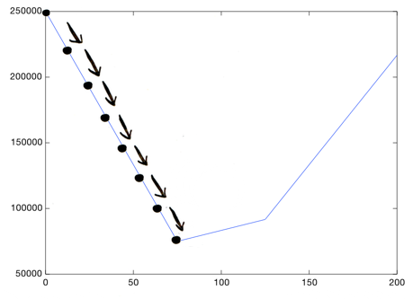

Предположим, вы подумываете продать свой дом. Недалеко расположенные от вас дома разных размеров продали по разным ценам:
Размер вашего дома – 3000 квадратных футов. За сколько стоит его продать? Вам нужно посмотреть на уже имеющиеся данные и предсказать цену для вашего дома. Это и называется линейной регрессией.
Вот простой способ сделать это. Посмотрите на данные, которые у вас уже есть:
Каждая точка представляет один дом. Теперь вы можете пристально рассмотреть график и нарисовать грубую линию, которая проходит довольно близко к каждой точке:
Теперь найдем на линии точку, соответствующую площади в 3000 кв.фт. и узнаем ее цену.
Вах! Ваш дом стоит продать за $260,000.
Ну вот и все. Графически отобразить данные, наметить «на глаз» линию, и использовать ее, чтобы сделать предсказание. Также нужно убедиться, что линия хорошо подходит:
Но конечно же нам не нужна такая линия, нарисованная «на глаз». Мы хотим вычислить ту самую, которая подойдет под данные лучше всего. В этом нам поможет машинное обучение.
Как решить, какая линия хороша? Вот пример плохой:
Эта линия проходит слишком высоко. Например, по ней видно, что дом площадью 1000 кв.фт. стоит продать за $310.000, но мы точно знаем, что на самом деле его продали за $200.000:
Может быть эту линию нарисовал пьяный человек… она на 110.000 долларов выше отметки для данного дома. Она также далеко отстоит от всех других значений:
В среднем, эта линия на $73,333 выше ($110,000 + $70,000 + $40,000 / 3).
Вот линия получше:
Эта линия в среднем промахивается на 8.333 доллара. Это число (8.333) называется стоимостью использования этой линии. «Стоимость» показывает, насколько линия промахивается мимо реальных данных. Самой лучшей линией будет та, которая меньше всего промахивается мимо имеющихся данных. Чтобы выяснить, какая линия лучше всех остальных, нам понадобится функция стоимости.
Начнем с базовой математики. Нарисуем линию. Вот, как выглядит уравнение этой линии:
Первое число говорит нам, как высоко находится начало линии:
Второе число говорит нам об угле этой линии:
Таким образом, нам надо придумать два достаточно хороших числа, которые заставят нашу линию подходить достаточно близко к данным. Вот,как мы это сделаем:
1) Выберем 2 исходных числа. Традиционно, их называют Θ0 и Θ1. Ноль и ноль будут хорошим первым предположением для них.
2) Нарисуем линию, используя эти числа:
(Да, это линия, у которой все предсказанные значения будут равны 0. Тем не менее, она остается хорошим первым предположением, и мы продолжим его улучшать).
Подсчитаем, насколько мы в среднем далеко от реальных данных:
Это называется функцией стоимости. Cost = f (theta1, theta2). Мы передаем Θ0 и Θ1 в функцию, и она говорит нам, насколько линия далека от реальных данных (иными словами, стоимость использования данной линии).
Дальше будет код:
Этому коду примерно соответствует такая формула:
В этой формуле, h(x) представляет предсказанное значение:
Это всего то навсего формула нашей линии! Если мы подставим определенное значение x то получим значение y.
Таким образом, h(x) – y дает нам разницу между предсказанным значением и реальным значением.
Для определенных значений Θ0 и Θ1, функция стоимости скажет, насколько они хороши (как далеки их предсказания линии от реальных данных). Но что мы будем делать, основываясь на этой информации? Как нам найти значения Θ0 и Θ1, которые нарисуют наилучшую линию? Используя градиентный спуск.
Позвольте начать с более простой версии градиентного спуска, а потом перейти к реальной. Предположим, мы решили оставить значение Θ0. Теперь можно попробовать различные значения для Тета1, и получить различные стоимости. Можем изобразить все эти стоимости на графике:
Можно увидеть, например, что Тета1 = 75 лучше, чем Тета1 = 160. Стоимость ниже:
Вот соответствующие им линии:

Теперь мы видим, что левая линия похоже лучше соответствует данным, чем правая, как и следовало бы ожидать, исходя из ее низкой стоимости.
И из этого графика видно, что Тета1 = 75 дает нам самую низкую стоимость:
Получается, если все стоимости изображены на графике подобным образом, нам нужно просто найти самую низкую точку на графике, и мы получим оптимальное значение Тета1!
Градиентный спуск помогает нам найти самую низкую точку на этом графике. Начав с некоторого значения Тета1, мы итеративно его обновляем, пока не доберемся до наилучшего значения. Так что, можно начать с Тета1 = 0. Потом надо узнать, нужно идти налево или направо?
Ну, мы хотим попасть вниз, так что сделаем небольшой шажок вправо:
Это будет новым значением Тета1. Мы опять пытаемся понять, надо идти направо или налево? На каждом шаге, нужно стремиться вниз, до тех пор, пока не окажемся настолько низко, насколько возможно:
Это и сеть градиентный спуск: идти вниз маленькими шажками, пока не доберемся до дна. Но как узнавать, путь вниз – это какой? Ответ будет очевиден для знатоков Матана, и не столь очевиден для остальных людей: нужно взять производную в этой точке. Эту часть я проскочу, и просто дам вам готовую к применению формулу. Стоит добавить, что если вы возьмете точку Тета1, и прибавите к ней производную в этой точке, то окажетесь ниже этой точки. Просто сделав это кучу раз (скажем, 1000), вы доберетесь до низа!
Это был упрощенный взгляд, теперь вернемся к исходной проблеме. Для ее решения нам необходимо узнать и Тета0, и Тета1. График будет выглядеть примерно так:
Заметьте, Тета0 = 200000 и Тета1 = 200 все будет довольно плохо, но Тета0 = 100000 и Тета1 = 50 будет довольно неплохим вариантом.
Это по-прежнему котел с нижней точкой, просто теперь он стал трехмерным, потому что мы учли также Тета0. Но сама идея остается без изменений: начав где-то на поверхности котла, шагать, пока не окажемся в нижней точке!
Вот способ, как найти линию наименьшей стоимости при помощи градиентного спуска. Нужно найти Тета0 и Тета1, которые дадут самую подходящую линию, начав с некоторого исходного предположения и обновляя его шаг за шагом, делая стоимость все меньше и меньше.
Вот формула градиентного спуска:
Это частные производные, которые практически не отличаются, за исключением дополнительного x в конце второй формулы.